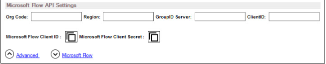

Overview
This article explains how to trigger operations in Netwrix Directory Manager (formerly GroupID) from Microsoft Flow (MS Flow). By linking Directory Manager operations to MS Flow, you can automate tasks and simplify business functions, ensuring they are executed in a set order without manual intervention.
Directory Manager supports moving groups between organizational units (OUs) or domains within the identity store. By linking the Disable_User_Accounts flow in MS Flow to the Move a Group to a Different Container function in Directory Manager, groups with disabled owners can be automatically moved to a specified container when the flow runs.
To achieve this, define a custom connector in MS Flow and use it within the Disable_User_Accounts flow. This connector enables the following operations in Directory Manager:
- Create a user
- Create a group
- Expire a group
- Update a Smart Group or Dynasty
- Move a group to a different container
- Renew a group
Once linked, the configured operation is triggered automatically when the flow runs.
Instructions
Step 1: Create a Custom Connector in Microsoft Flow
Refer to the official Microsoft documentation to create a custom connector in MS Flow: Create a Custom Connector from Scratch ⸱ Microsoft 🡥.
During setup, you must enter the Client ID and Client Secret and import the GroupIDConnector.swagger.json file.
Step 2: Retrieve the Client ID, Secret, and Swagger File
- In Directory Manager Management Console, click the Identity Stores node.
- On the Identity Stores tab, double-click the identity store you want to link to MS Flow.
- On the Workflow tab in identity store properties, click the MS Flow link.

- Click the copy button next to MS Flow Client ID to copy the client ID to the clipboard then paste the ID in the Client ID box in MS Flow.
- Click the copy button next to MS Flow Client Secret to copy the client secret (password) to the clipboard and then paste this password in the Client Secret box in MS Flow.
- In addition, import the GroupIDConnector.swagger.json file from the Directory Manager installation directory, located at:
[Directory Manager installation directory]\Imanami\GroupID
11.0\Automate\GroupIDConnector\
NOTE: The default path is
C:\Program Files\Imanami\GroupID 11.0\Automate\GroupIDConnector\. This path may vary depending on your environment.
- Complete the process to create the connector in MS Flow.